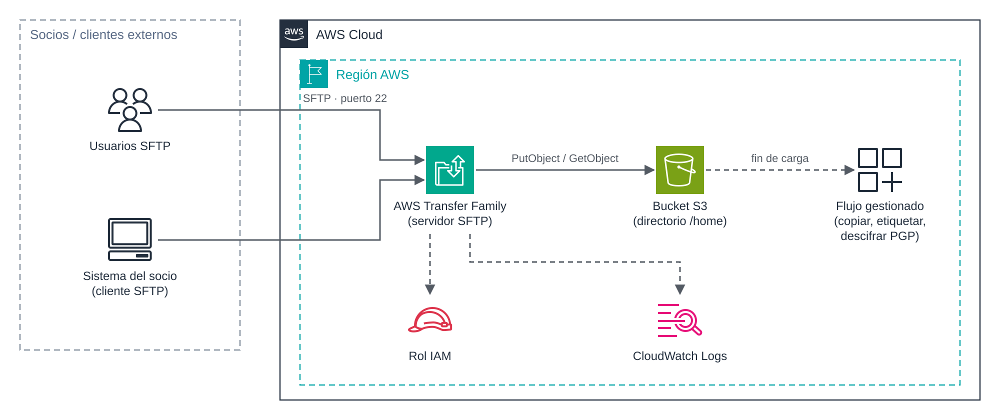

UD5 · 4. AWS Transfer Family¶
Módulo: 5162 · Administración de bases de datos y almacenamiento en la nube Unidad didáctica: UD5 · Transferencia, sincronización y migración de datos Temporalización: semana 1 · sesión 6 Resultados de aprendizaje: RA5 (criterios a, b, c, e, g) · RA6 (criterios c, d)
1. Introducción¶
Muchas organizaciones intercambian ficheros a diario con proveedores, clientes, bancos o administraciones mediante protocolos clásicos como SFTP o FTPS. Estos socios tienen procesos y scripts que no van a modificar porque su interlocutor migre a la nube.
AWS Transfer Family resuelve este escenario. Ofrece servidores gestionados de SFTP, FTPS, FTP y AS2 que almacenan los ficheros directamente en Amazon S3 o Amazon EFS. Los socios siguen conectándose como siempre, mientras que la organización deja de mantener servidores de ficheros propios.
Objetivos¶
- Identificar los protocolos y los tipos de endpoint que ofrece Transfer Family.
- Comprender las opciones de gestión de usuarios y el aislamiento mediante directorios lógicos.
- Conocer los flujos gestionados de postprocesamiento.
- Valorar su coste y compararlo con DataSync.
2. Arquitectura¶

Figura 4. Intercambio de ficheros con socios externos mediante un servidor SFTP gestionado que almacena en Amazon S3.
El cliente SFTP del socio se conecta al endpoint del servidor. Transfer Family autentica al usuario y asume el rol IAM asociado para leer o escribir en el bucket. Las sesiones se registran en CloudWatch Logs. Al terminar una carga, puede lanzarse un flujo gestionado que procesa el fichero.
3. Protocolos¶
| Protocolo | Seguridad | Puerto | Uso típico | Restricciones |
|---|---|---|---|---|
| SFTP | Cifrado mediante SSH. | 22 | Intercambio seguro de ficheros; el más extendido. | — |
| FTPS | Cifrado mediante TLS. | 21 (control) y rango de puertos pasivos | Socios con infraestructura FTP que exigen cifrado. | Requiere endpoint de VPC y certificado de AWS Certificate Manager. |
| FTP | Sin cifrado. | 21 y puertos pasivos | Aplicaciones heredadas en redes internas. | Solo endpoint de VPC interno; nunca expuesto a Internet. |
| AS2 | Firma y cifrado de mensajes, con acuse de recibo (MDN). | HTTP/HTTPS | Intercambio electrónico de documentos (EDI) entre empresas. | Configuración de socios comerciales y certificados. |
Además de los servidores, la familia incluye conectores SFTP, que permiten enviar o recoger ficheros de servidores SFTP externos, y aplicaciones web, que ofrecen a usuarios no técnicos un acceso a S3 desde el navegador.
4. Tipos de endpoint¶
| Tipo | Accesibilidad | Control de red |
|---|---|---|
| Público | Desde Internet, con un nombre DNS proporcionado por AWS. | Sin grupos de seguridad. Solo admite SFTP. |
| VPC, interno | Solo desde la VPC y redes conectadas (VPN, Direct Connect). | Grupos de seguridad. |
| VPC, con acceso desde Internet | Desde Internet mediante direcciones IP elásticas fijas. | Grupos de seguridad, lo que permite restringir el acceso a las IP de cada socio. |
La opción de VPC con acceso desde Internet es la habitual en entornos profesionales: los socios suelen exigir una IP fija para sus cortafuegos, y la organización puede limitar el acceso a las direcciones de cada socio.
5. Gestión de usuarios¶
5.1. Proveedores de identidad¶
| Proveedor | Autenticación | Uso |
|---|---|---|
| Gestionado por el servicio | Claves SSH públicas almacenadas en Transfer Family. | Pocos usuarios y solo SFTP. Es la opción más sencilla. |
| AWS Directory Service | Credenciales de Microsoft Active Directory. | Usuarios corporativos ya existentes en AD. |
| Proveedor personalizado | Función AWS Lambda o API de Amazon API Gateway que valida las credenciales. | Integración con sistemas propios, autenticación por contraseña o múltiples factores. |
5.2. Configuración de cada usuario¶
Cada usuario se define con:
- Rol IAM: determina a qué bucket o sistema de ficheros puede acceder Transfer Family en su nombre.
- Política de sesión (opcional): restringe aún más los permisos del rol para ese usuario concreto.
- Directorio de inicio: carpeta en la que comienza la sesión.
- Directorios lógicos: asignan rutas visibles para el usuario a rutas reales de S3 o EFS. Así, el usuario queda encerrado en su carpeta (equivalente a un chroot) y no ve la estructura real del almacenamiento.
- Perfil POSIX (solo con EFS): identificadores de usuario y grupo para aplicar los permisos del sistema de ficheros.
6. Flujos gestionados¶
Un flujo gestionado (managed workflow) es una secuencia de pasos que se ejecuta automáticamente cuando termina la carga de un fichero. Los pasos predefinidos son:
- Copiar el fichero a otra ubicación.
- Etiquetar el objeto (útil para políticas de ciclo de vida o de copias de seguridad).
- Descifrar ficheros cifrados con PGP.
- Eliminar el fichero original.
- Paso personalizado mediante una función Lambda (por ejemplo, validar el formato).
Cada flujo puede definir pasos de gestión de excepciones para cuando falla alguno de los anteriores.
7. Ejemplo con la AWS CLI¶
Advertencia de coste. Un servidor de Transfer Family se factura por hora y por protocolo mientras exista, se use o no (unos 216 USD al mes por un solo protocolo). En el Learner Lab, este ejemplo debe realizarse como demostración breve y el servidor debe eliminarse inmediatamente después.
# 1. Servidor SFTP público con usuarios gestionados por el servicio
aws transfer create-server \
--protocols SFTP \
--endpoint-type PUBLIC \
--identity-provider-type SERVICE_MANAGED \
--tags Key=Proyecto,Value=UD5
# 2. Usuario encerrado en su carpeta del bucket mediante un directorio lógico
aws transfer create-user \
--server-id <id-servidor> \
--user-name socio01 \
--role arn:aws:iam::<cuenta>:role/LabRole \
--home-directory-type LOGICAL \
--home-directory-mappings '[{"Entry":"/","Target":"/ud5-destino-<iniciales>/socios/socio01"}]' \
--ssh-public-key-body "$(cat ~/.ssh/socio01.pub)"
# 3. Conexión desde el cliente
sftp -i ~/.ssh/socio01 socio01@<id-servidor>.server.transfer.us-east-1.amazonaws.com
# 4. Eliminación del servidor al terminar
aws transfer delete-server --server-id <id-servidor>
8. Monitorización y auditoría¶
- CloudWatch Logs: registros estructurados de cada sesión (conexiones, autenticaciones, ficheros abiertos, cargados y descargados). Requiere asignar al servidor un rol de registro.
- Métricas de CloudWatch: bytes y ficheros de entrada y salida, y ejecuciones de flujos gestionados.
- AWS CloudTrail: registro de las llamadas a la API, como la creación de usuarios o la modificación del servidor.
9. Costes¶
| Concepto | Precio de referencia |
|---|---|
| Protocolo habilitado en un servidor | 0,30 USD por hora y protocolo. |
| Datos cargados o descargados | 0,04 USD por GB. |
| Mensajes AS2, conectores, flujos y aplicaciones web | Tarifas adicionales según uso. |
Precios de referencia en US East (N. Virginia), noviembre de 2026.
A diferencia de la mayoría de los servicios de transferencia, Transfer Family tiene un coste fijo por el tiempo de vida del servidor. Por eso conviene agrupar varios socios en un mismo servidor y no habilitar protocolos innecesarios.
10. Transfer Family frente a DataSync¶
| Criterio | AWS DataSync | AWS Transfer Family |
|---|---|---|
| Quién inicia la transferencia | La organización, mediante tareas. | El usuario o el socio, desde su cliente. |
| Protocolos | Lectura de NFS, SMB, HDFS y almacenamiento de objetos. | SFTP, FTPS, FTP y AS2. |
| Caso típico | Migración o sincronización masiva de sistemas propios. | Intercambio continuo con terceros. |
| Modelo de coste | Por GB transferido. | Por hora de servidor más GB transferido. |
11. Ideas clave¶
- Transfer Family ofrece servidores SFTP, FTPS, FTP y AS2 gestionados, con almacenamiento en S3 o EFS.
- Los socios mantienen sus procesos; la organización elimina la gestión de servidores propios.
- El endpoint de VPC permite IP fijas y control mediante grupos de seguridad.
- Los directorios lógicos aíslan a cada usuario en su carpeta.
- El servidor se factura por hora mientras exista: hay que eliminarlo cuando no se use.
12. Preguntas de autoevaluación¶
- Un banco exige conectarse a una IP fija y que solo su red pueda acceder al servidor. ¿Qué tipo de endpoint configurarías?
- ¿Por qué FTP solo puede habilitarse en un endpoint de VPC interno?
- ¿Qué mecanismo usarías para que cada proveedor solo vea su propia carpeta del bucket?
Referencias¶
- AWS. What is AWS Transfer Family? https://docs.aws.amazon.com/transfer/latest/userguide/what-is-aws-transfer-family.html
- AWS. AWS Transfer Family pricing. https://aws.amazon.com/aws-transfer-family/pricing/